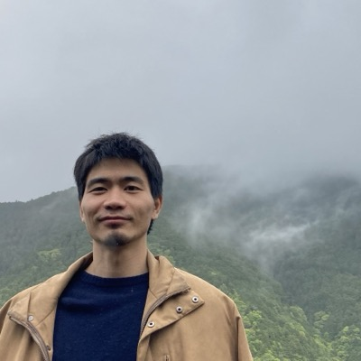

My research lies at the intersection of quantum computing and topology. I study quantum algorithms and computational complexity theory, with a particular focus on topological data analysis (TDA) and Hamiltonian complexity. A central theme is understanding when quantum computers offer genuine advantages for topological and geometric problems.
量子計算とトポロジーの融合領域を研究しています。 量子アルゴリズム・計算複雑性理論を中心に、特に位相的データ解析（TDA）への 量子計算の応用とハミルトニアン計算複雑性を研究しています。
Research interests: quantum algorithms · quantum computational complexity · topological data analysis · Hamiltonian complexity
研究テーマ： 量子アルゴリズム · 量子計算複雑性 · 位相的データ解析 · ハミルトニアン計算複雑性